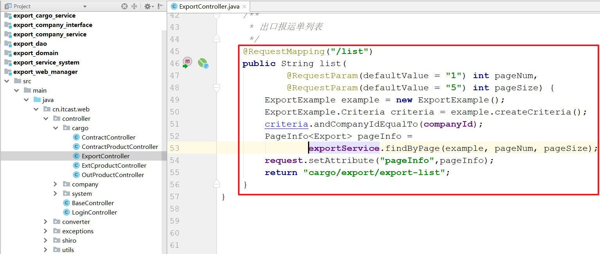

学习目标
1、能够实现百万数据的Excel导出
2、能够理解出口报运模块
3、能够理解出口报运单的生成
4、能够理解报运单的修改操作
1. 模板导出（一）介绍
概述
自定义生成Excel报表文件还是有很多不尽如意的地方，特别是针对复杂报表头，单元格样式，字体等操作。手写这些代码不仅费时费力，有时候效果还不太理想。那怎么样才能更方便的对报表样式，报表头进行处理呢？答案是使用已经准备好的Excel模板，==只需要关注模板中的数据即可。==
模板
步骤
制作模版文件（模版文件的路径）
导入（加载）模版文件，从而得到一个工作簿
读取工作表
读取行
读取单元格
读取单元格样式
设置单元格内容
其他单元格就可以使用读到的样式了2. 模板导出（二）实现
目标
把前面的excel打印，改为模板打印。
实现
package cn.itcast.web.controller.cargo;
import cn.itcast.vo.ContractProductVo;
import cn.itcast.web.controller.BaseController;
import cn.itcast.web.utils.DownloadUtil;
import cn.itcsat.service.cargo.ContractProductService;
import com.alibaba.dubbo.config.annotation.Reference;
import org.apache.poi.ss.usermodel.*;
import org.apache.poi.ss.util.CellRangeAddress;
import org.apache.poi.xssf.usermodel.XSSFWorkbook;
import org.springframework.stereotype.Controller;
import org.springframework.web.bind.annotation.RequestMapping;
import org.springframework.web.bind.annotation.ResponseBody;
import javax.servlet.ServletOutputStream;
import java.io.ByteArrayOutputStream;
import java.io.IOException;
import java.io.InputStream;
import java.net.URLEncoder;
import java.text.SimpleDateFormat;
import java.util.Date;
import java.util.List;
@Controller
@RequestMapping("/cargo/contract")
public class OutProductController extends BaseController {
@Reference
private ContractProductService contractProductService;
/*
作用： 进入出货表页面
url: /cargo/contract/print.do
参数：没有
返回值 :出货表页面
*/
@RequestMapping("/print")
public String print(){
return "cargo/print/contract-print";
}
/*
作用： 下载出货表
url: /cargo/contract/printExcel.do?inputDate=2015-01
参数：inputDate 出货日期
返回值 : 无，因为是下载
注意： 如果一个方法是下载文件的时候，必须使用@ResponseBody
*/
@RequestMapping("/printExcel")
@ResponseBody //返回字符串、 返回json、下载
public void printExcel(String inputDate) throws IOException {
//1. 读取模板的输入流 , 读取webapp目录下的资源记得是使用ServletContext
InputStream inputStream = session.getServletContext().getResourceAsStream("/make/xlsprint/tOUTPRODUCT.xlsx");
//2. 使用模块的输入流创建一个工作薄
Workbook workbook = new XSSFWorkbook(inputStream);
//得到工作单
Sheet sheet = workbook.getSheetAt(0);
//3. 设置标题内容
String title = inputDate.replaceAll("-0","年").replaceAll("-","年")+"月份出货表";
//获取第0行
Row row = sheet.getRow(0);
//获取1个单元格
Cell cell = row.getCell(1);
//设置单元格的内容
cell.setCellValue(title);
//4. 提取第二行的样式出来存储到数组中，提供给后面的数据去使用
CellStyle[] cellStyles = new CellStyle[8];
//获取第二行
row= sheet.getRow(2);
//遍历数组
for (int i = 0; i < cellStyles.length; i++) {
cell = row.getCell(i+1);
cellStyles[i] =cell.getCellStyle();
}
//定义一个变量保存索行
int index = 2;
SimpleDateFormat simpleDateFormat = new SimpleDateFormat("yyyy-MM-dd");
//获取到货物的数据
List<ContractProductVo> contractProductList = contractProductService.findByShipTime(getLoginUserCompanyId(), inputDate);
if(contractProductList!=null){
//遍历所有的货物的数据
for (ContractProductVo contractProductVo : contractProductList) {
//每一个货物的数据就是一行
row = sheet.createRow(index++);
// 客户名称
String customerName = contractProductVo.getCustomName();
if(customerName!=null){
cell = row.createCell(1);
//设置单元格样式
cell.setCellStyle(cellStyles[0]);
//设置内容
cell.setCellValue(customerName);
}
// 订单号
String contractNo = contractProductVo.getContractNo();
if(contractNo!=null){
cell = row.createCell(2);
//设置单元格样式
cell.setCellStyle(cellStyles[1]);
//设置内容
cell.setCellValue(contractNo);
}
//货号
String productNo = contractProductVo.getProductNo();
if(productNo!=null){
cell = row.createCell(3);
//设置单元格样式
cell.setCellStyle(cellStyles[2]);
//设置内容
cell.setCellValue(productNo);
}
// 数量
Integer cnumber = contractProductVo.getCnumber();
if(cnumber!=null){
cell = row.createCell(4);
//设置单元格样式
cell.setCellStyle(cellStyles[3]);
//设置内容
cell.setCellValue(cnumber);
}
// 工厂
String factoryName = contractProductVo.getFactoryName();
if(factoryName!=null){
cell = row.createCell(5);
//设置单元格样式
cell.setCellStyle(cellStyles[4]);
//设置内容
cell.setCellValue(factoryName);
}
// 客户名称
Date deliveryPeriod = contractProductVo.getDeliveryPeriod();
if(deliveryPeriod!=null){
cell = row.createCell(6);
//设置单元格样式
cell.setCellStyle(cellStyles[5]);
//设置内容
cell.setCellValue(simpleDateFormat.format(deliveryPeriod));
}
// 客户名称
Date shipTime = contractProductVo.getShipTime();
if(shipTime!=null){
cell = row.createCell(7);
//设置单元格样式
cell.setCellStyle(cellStyles[6]);
//设置内容
cell.setCellValue(simpleDateFormat.format(shipTime));
}
//货号
String tradeTerms = contractProductVo.getTradeTerms();
if(tradeTerms!=null){
cell = row.createCell(8);
//设置单元格样式
cell.setCellStyle(cellStyles[7]);
//设置内容
cell.setCellValue(tradeTerms);
}
}
}
//字节数组输出流，该类的本质就是内部维护一个字节数组
ByteArrayOutputStream byteArrayOutputStream = new ByteArrayOutputStream();
//把工作簿数据写入到ByteArrayOutputStream中
workbook.write(byteArrayOutputStream);
new DownloadUtil().download(byteArrayOutputStream,response,"出货表.xlsx");
}
}小结
模板导出最核心代码的是什么？
读取模板的样式存储到数组中
3. 百万数据POI操作（一）概述
概述
我们都知道Excel可以分为早期的Excel2003版本（使用POI的HSSF对象操作）和Excel2007版本（使用POI的XSSF操作），两者对百万数据的支持如下：
- Excel 2003：在POI中使用HSSF对象时，excel 2003最多只允许存储65536条数据，一般用来处理较少的数据量。这时对于百万级别数据，Excel肯定容纳不了。
- Excel 2007：当POI升级到XSSF对象时，它可以直接支持excel2007以上版本，因为它采用ooxml格式。这时excel可以==支持1048576条==数据，单个sheet表就支持近百万条数据。但实际运行时还可能存在问题，原因是执行POI报表所产生的行对象，单元格对象，字体对象，他们都不会销毁，这就导致OOM的风险
JDK性能监控工具
没有性能监控工具一切推论都只能停留在理论阶段，我们可以使用Java的性能监控工具来监视程序的运行情况，包括CUP,垃圾回收，内存的分配和使用情况，这让程序的运行阶段变得更加可控，也可以用来证明我们的推测。这里我们使用JDK提供的性能工具Jvisualvm来监控程序运行。
VisualVM 是Netbeans的profile子项目，已在JDK中自带，能够监控线程，内存情况，查看方法的CPU时间和内存中的对 象，已被GC的对象，反向查看分配的堆栈。
Jvisualvm位于JAVA_HOME/bin目录下，直接双击就可以打开该程序。如果只是监控本地的java进程，是不需要配置参数的，直接打开就能够进行监控。首先我们需要在本地打开一个Java程序，例如我打开员工后台管理系统进程，这时在jvisualvm界面就可以看到与IDEA相关的Java进程了：
Jvisualvm的使用
Jvisualvm使用起来比较简单，双击点击当前运行的进程即可进入到程序的监控界面：
双击Jvisualvm.exe
概述：可以看到进程的启动参数。
监视：左上：cpu利用率，gc状态的监控，右上：堆利用率，永久内存区的利用率，左下：类的监控，右下：线程的监控
线程：能够显示线程的名称和运行的状态，在调试多线程时必不可少，而且可以点进一个线程查看这个线程的详细运行情况
==备注： -Xms512m -Xmx1024m配置最大内存==
4. 百万数据POI操作（二）处理百万数据报表导出
需求
使用Apache POI完成百万数据量的Excel报表导出。
分析
基于XSSFWork导出Excel报表，是通过将所有单元格对象保存到内存中，当所有的Excel单元格全部创建完成之后一次性写入到Excel并导出。当百万数据级别的Excel导出时，随着表格的不断创建，内存中对象越来越多，直至内存溢出。ApachePoi提供了SXSSFWork对象，专门用于处理大数据量Excel报表导出。
在实例化==SXSSFWorkBook==这个对象时，可以指定在内存中所产生的POI导出相关对象的数量（默认100），一旦内存中的对象的个数达到这个指定值时，==就将内存中的这些对象的内容写入到磁盘中==（XML的文件格式），就可以将这些对象从内存中销毁，以后只要达到这个值，就会以类似的处理方式处理，直至Excel导出完成。
百万级数据导出的条件（百万级数据导出很容易导致内存溢出，那么这时候我们如果真的遇到百万级数据的时候，我们就能再管样式，我们把有限的内存用于最核心的数据身上）
- 实现类必须使用SXSSFWrokBook， 该类是每读取100行数据就会输出。
- 不支持模板导出
- 样式不能超过64000个.
实现
步骤1：模拟百万数据的导出
这里把导出的工作簿对象换为了SXSSF, 以及查询的每一条数据遍历6000次导出：
package cn.itcast.web.controller.cargo;
import cn.itcast.vo.ContractProductVo;
import cn.itcast.web.controller.BaseController;
import cn.itcast.web.utils.DownloadUtil;
import cn.itcsat.service.cargo.ContractProductService;
import com.alibaba.dubbo.config.annotation.Reference;
import org.apache.poi.ss.usermodel.*;
import org.apache.poi.ss.util.CellRangeAddress;
import org.apache.poi.xssf.streaming.SXSSFWorkbook;
import org.apache.poi.xssf.usermodel.XSSFWorkbook;
import org.springframework.stereotype.Controller;
import org.springframework.web.bind.annotation.RequestMapping;
import org.springframework.web.bind.annotation.ResponseBody;
import javax.servlet.ServletOutputStream;
import java.io.ByteArrayOutputStream;
import java.io.IOException;
import java.io.InputStream;
import java.net.URLEncoder;
import java.text.SimpleDateFormat;
import java.util.Date;
import java.util.List;
@Controller
@RequestMapping("/cargo/contract")
public class OutProductController extends BaseController {
@Reference
private ContractProductService contractProductService;
@RequestMapping("/printExcel")
@ResponseBody //返回字符串、 返回json、下载
public void printExcel(String inputDate) throws IOException {
//1. 创建工作薄
Workbook workbook = new SXSSFWorkbook();
//2. 创建工作单
Sheet sheet = workbook.createSheet("出货表");
//3. 合并单元格
/* CellRangeAddress(int firstRow, int lastRow, int firstCol, int lastCol)
firstRow： 开始行
lastRow: 结束行
firstCol: 开始列
lastCol: 结束列*/
sheet.addMergedRegion(new CellRangeAddress(0,0,1,8));
//4. 设置列宽
sheet.setColumnWidth(0,6*256);
sheet.setColumnWidth(1,21*256);
sheet.setColumnWidth(2,16*256);
sheet.setColumnWidth(3,29*256);
sheet.setColumnWidth(4,11*256);
sheet.setColumnWidth(5,11*256);
sheet.setColumnWidth(6,11*256);
sheet.setColumnWidth(7,11*256);
sheet.setColumnWidth(8,11*256);
sheet.setColumnWidth(9,11*256);
//标题 第0行 2015-01 2015年1 2015-11
String title = inputDate.replaceAll("-0","年").replaceAll("-","年")+"月份出货表";
Row row = sheet.createRow(0);
Cell cell = row.createCell(1);
//设置单元格样式
cell.setCellStyle(bigTitle(workbook));
//设置内容
cell.setCellValue(title);
//表头部分
String[] titles = {"客户","订单号","货号","数量","工厂","工厂交期","船期","贸易条款"};
row = sheet.createRow(1);
for (int i = 0; i < titles.length; i++) {
//创建单元格
cell = row.createCell(i+1);
//设置样式
cell.setCellStyle(title(workbook));
//设置内容
cell.setCellValue(titles[i]);
}
//定义一个变量保存索行
int index = 2;
SimpleDateFormat simpleDateFormat = new SimpleDateFormat("yyyy-MM-dd");
//获取到货物的数据
List<ContractProductVo> contractProductList = contractProductService.findByShipTime(getLoginUserCompanyId(), inputDate);
if(contractProductList!=null){
for (int i = 0; i <5800 ; i++) {
//遍历所有的货物的数据
for (ContractProductVo contractProductVo : contractProductList) {
//每一个货物的数据就是一行
row = sheet.createRow(index++);
// 客户名称
String customerName = contractProductVo.getCustomName();
if(customerName!=null){
cell = row.createCell(1);
//设置单元格样式
// cell.setCellStyle(text(workbook));
//设置内容
cell.setCellValue(customerName);
}
// 订单号
String contractNo = contractProductVo.getContractNo();
if(contractNo!=null){
cell = row.createCell(2);
//设置单元格样式
// cell.setCellStyle(text(workbook));
//设置内容
cell.setCellValue(contractNo);
}
//货号
String productNo = contractProductVo.getProductNo();
if(productNo!=null){
cell = row.createCell(3);
//设置单元格样式
// cell.setCellStyle(text(workbook));
//设置内容
cell.setCellValue(productNo);
}
// 数量
Integer cnumber = contractProductVo.getCnumber();
if(cnumber!=null){
cell = row.createCell(4);
//设置单元格样式
// cell.setCellStyle(text(workbook));
//设置内容
cell.setCellValue(cnumber);
}
// 工厂
String factoryName = contractProductVo.getFactoryName();
if(factoryName!=null){
cell = row.createCell(5);
//设置单元格样式
// cell.setCellStyle(text(workbook));
//设置内容
cell.setCellValue(factoryName);
}
// 客户名称
Date deliveryPeriod = contractProductVo.getDeliveryPeriod();
if(deliveryPeriod!=null){
cell = row.createCell(6);
//设置单元格样式
// cell.setCellStyle(text(workbook));
//设置内容
cell.setCellValue(simpleDateFormat.format(deliveryPeriod));
}
// 客户名称
Date shipTime = contractProductVo.getShipTime();
if(shipTime!=null){
cell = row.createCell(7);
//设置单元格样式
// cell.setCellStyle(text(workbook));
//设置内容
cell.setCellValue(simpleDateFormat.format(shipTime));
}
//货号
String tradeTerms = contractProductVo.getTradeTerms();
if(tradeTerms!=null){
cell = row.createCell(8);
//设置单元格样式
// cell.setCellStyle(text(workbook));
//设置内容
cell.setCellValue(tradeTerms);
}
}
}
}
//字节数组输出流，该类的本质就是内部维护一个字节数组
ByteArrayOutputStream byteArrayOutputStream = new ByteArrayOutputStream();
//把工作簿数据写入到ByteArrayOutputStream中
workbook.write(byteArrayOutputStream);
new DownloadUtil().download(byteArrayOutputStream,response,"出货表.xlsx");
}
}第二步：导出报错了，注意：在SXSSF的excel导出中，为了提供导出效率，限制了导出的样式对象不能超过64000个。所以需要注释到上面的样式代码。
第三步：注释样式代码
第四步：导出结果

以及导出过程中，查看堆内存的占用：

小结
- 如果有百万级数据需要导出如何处理？
- SXSSFWorkBook
- 不准使用模板
- 样式不能超过64000个
5. 合同管理
需求
==合同管理，就是购销合同列表显示，只显示购销合同状态为1（已上报）==
购销合同状态： 0(草稿状态，草稿状态合同不算是正式合同) 1(已上报，这种合同已经
成为一个真正的合同，允许生成报运单) 2 （该合同已经生成了报运单）
为什么要有这个模块？
后续需要对已上报的购销合同进行海关报运。
实现
第一步：创建ExportController，控制器类
第二步：完善内容
package cn.itcast.web.controller.cargo;
import cn.itcast.domain.cargo.Contract;
import cn.itcast.domain.cargo.ContractExample;
import cn.itcast.web.controller.BaseController;
import cn.itcsat.service.cargo.ContractService;
import com.alibaba.dubbo.config.annotation.Reference;
import com.github.pagehelper.PageInfo;
import org.springframework.stereotype.Controller;
import org.springframework.web.bind.annotation.RequestMapping;
import org.springframework.web.bind.annotation.RequestParam;
@Controller
@RequestMapping("/cargo/export")
public class ExportController extends BaseController {
@Reference
private ContractService contractService;
/*
作用 ： 进入购销合同的管理页面，显示状态为1的购销合同
url : /cargo/export/contractList.do
参数 : 没有
返回值 :export-contractList
*/
@RequestMapping("/contractList")
public String contractList(@RequestParam(defaultValue = "1") Integer pageNum, @RequestParam(defaultValue = "5") Integer pageSize){
ContractExample contractExample = new ContractExample();
//排序
contractExample.setOrderByClause("create_time desc");
//本公司的购销合同并且是状态为1
contractExample.createCriteria().andCompanyIdEqualTo(getLoginUserCompanyId()).andStateEqualTo(1);
PageInfo<Contract> pageInfo = contractService.findByPage(contractExample, pageNum, pageSize);
//存储到域中
request.setAttribute("pageInfo",pageInfo);
return "cargo/export/export-contractList";
}
}
修改export-contractlist.jsp
测试
6. 出口报运 业务概述
SaaS货代平台是通过国际物流运输把货物运国外，==这个过程需要经过海关人员的审批。所以公司对于出口的产品就要进行出口报运，就需要形成出口报运单==，将来公司的报运人员，需要拿着出口报运单到海关进行审批。而出口报运单需要打印出来，打印的数据来自于数据库表。
特朗普 向 老钟 采购一批口罩， 老钟能够马上装箱运输？ 老钟运货出发之前，我是需要把这批获取拿去海关那边进行报运， 报运就是给海关看到你运输的是有什么产品？ 海关那边还会给你的商品打税。
之所以会保存报运单这个实体： 是因为购销合同里面的数据对于海关而言有些是多余的，有些是不足。这个过程是需要海关规定
小结
为什么需要有报运模块？ 什么是报运？
- 因为我们的购销合同海关是不认，我们拿着商品去报运一定要符合海关那边规定的格式。
- 报运： 拿着报运单给海关那边去审批， 海关需要核实有什么货物，还要给你打税。
报运表与购销合同的关系？
1. 一个报运单是可以包含多个购销合同的。
生成报运单的业务分析
- 把购销合同的信息导入到报运单中。- 把购销合同的货物数据迁移报运单的商品表中
- 把购销合同的附件数据迁移到报运单的附件表中
7. 出口报运 表结构分析
整体结构
通过数据库表结构我们可以看出，报运单中包含合同的信息，此时就需要用到购销合同表中的数据。同时报运商品明细用到了合同下的货物数据，而报运商品附件用到了合同下货物的附件中的数据。通过一对比，我们发现就是数据的搬家。
报运单表：co_export
报运商品表：co_export_product
报运商品附件表：co_ext_eproduct
报运单表，关键字段说明
为什么要这样设计？
Q：此时，有人可能会问了，为什么不直接用购销合同，货物以及附件三张表存储报运信息，还是要新建报运表来存储？
A：这是因为，每个货代平台对合同，货物和附件的定义要求不一样，但是在海关处进行报关时，同类商品的数据格式要求是一样的，例如我们定义货物的时候，关注的是厂家，货号，单价等等。而报关时，货物的单位，长宽高等等数据就是必须的，所以此时需要两套表来分别存储。进而也就有了我们的数据搬家。
Q：但是这里面我们面临一个问题：当我们有合同号时，想要获取合同下的附件时，需要先获取合同，然后再根据合同获取货物，然后再遍历每个货物，取出货物的附件。这种查询十分的不方便。如何解决？
A：就是在传统的一对多关系中，都会在多方加入一个一方的主键作为它的外键，但是在==打断设计==思想指导下，不会这样实现，它会在一方的表中加入一个冗余字段，用于保存多方的主键，并且用指定的分隔符进行分隔。
真正的实现原理：就是通过打段字段，实现数据的冗余，从而一样的可以解决一个报运单下有多个购销合同的问题。
打断设计？
其实就是减少表与表的关联，提高查询效率。
图1：没有用打断设计
图2：使用打断设计
总结
需要把购销合同的数据迁移到报运单中
需要把购销合同的货物数据迁移到报运单的商品表中
需要购销合同的附件的数据迁移到报运单的附件表中
打断设计：
根据数据库的设计原本1~n的时候是在n方维护外键，现在打断设计的思想
就是在1方维护外键，外键与外键之间使用，分割，主要是为了减少多表查询，提高
效率
8. 报运单 列表
需求
显示co_export表数据：
步骤
- 编写实体类
- 编写dao
- 编写dao接口映射
- 编写service接口
- 编写service实现
- 控制器添加报运列表展示方法
- 页面修改取值
实现
编写实体类
从素材资料中拷贝实体类资源：
编写dao
编写dao接口映射
编写service接口
图1：
图2：
public interface ExportService { Export findById(String id); void save(Export export); void update(Export export); void delete(String id); PageInfo<Export> findByPage(ExportExample example, int pageNum, int pageSize); }图3：
public interface ExportProductService { ExportProduct findById(String id); void save(ExportProduct exportProduct); void update(ExportProduct exportProduct); void delete(String id); PageInfo<ExportProduct> findByPage(ExportProductExample exportProductExample, int pageNum, int pageSize); }编写service实现
图1：
ExportServiceImp实现类图2：
package cn.itcast.service.cargo.impl; import cn.itcast.dao.cargo.ExportDao; import cn.itcast.domain.cargo.Export; import cn.itcast.domain.cargo.ExportExample; import cn.itcsat.service.cargo.ExportService; import com.alibaba.dubbo.config.annotation.Service; import com.github.pagehelper.PageHelper; import com.github.pagehelper.PageInfo; import org.springframework.beans.factory.annotation.Autowired; import java.util.Date; import java.util.List; import java.util.UUID; @Service public class ExportServiceImpl implements ExportService { @Autowired private ExportDao exportDao; /* 报运单分页查询 */ @Override public PageInfo<Export> findByPage(ExportExample exportExample, int pageNum, int pageSize) { PageHelper.startPage(pageNum,pageSize); //查询数据 List<Export> exportList = exportDao.selectByExample(exportExample); //得到报运单页面 PageInfo<Export> pageInfo = new PageInfo<>(exportList); return pageInfo; } /* 报运单条件查询 */ @Override public List<Export> findAll(ExportExample exportExample) { List<Export> exportList = exportDao.selectByExample(exportExample); return exportList; } /* 根据id查询报运单 */ @Override public Export findById(String id) { return exportDao.selectByPrimaryKey(id); } /* 添加报运单 */ @Override public void save(Export export) { export.setId(UUID.randomUUID().toString()); //有两个字段不能为空 export.setCreateTime(new Date()); export.setUpdateTime(new Date()); exportDao.insertSelective(export); } /* 更新报运单 */ @Override public void update(Export export) { //修改更新的时间 export.setUpdateTime(new Date()); exportDao.updateByPrimaryKeySelective(export); } /* 根据主键删除报运单 */ @Override public void delete(String id) { exportDao.deleteByPrimaryKey(id); } }报运商品的服务实现类
package cn.itcast.service.cargo.impl; import cn.itcast.dao.cargo.ExportProductDao; import cn.itcast.domain.cargo.ExportProduct; import cn.itcast.domain.cargo.ExportProductExample; import cn.itcsat.service.cargo.ExportProductService; import com.alibaba.dubbo.config.annotation.Service; import com.github.pagehelper.PageHelper; import com.github.pagehelper.PageInfo; import org.springframework.beans.factory.annotation.Autowired; import java.util.Date; import java.util.List; import java.util.UUID; @Service public class ExportProductServiceImpl implements ExportProductService { @Autowired private ExportProductDao exportProductDao; /* 报运商品分页查询 */ @Override public PageInfo<ExportProduct> findByPage(ExportProductExample exportProductExample, int pageNum, int pageSize) { PageHelper.startPage(pageNum,pageSize); //查询数据 List<ExportProduct> exportProductList = exportProductDao.selectByExample(exportProductExample); //得到报运商品页面 PageInfo<ExportProduct> pageInfo = new PageInfo<>(exportProductList); return pageInfo; } /* 报运商品条件查询 */ @Override public List<ExportProduct> findAll(ExportProductExample exportProductExample) { List<ExportProduct> exportProductList = exportProductDao.selectByExample(exportProductExample); return exportProductList; } /* 根据id查询报运商品 */ @Override public ExportProduct findById(String id) { return exportProductDao.selectByPrimaryKey(id); } /* 添加报运商品 */ @Override public void save(ExportProduct exportProduct) { exportProduct.setId(UUID.randomUUID().toString()); //有两个字段不能为空 exportProduct.setCreateTime(new Date()); exportProduct.setUpdateTime(new Date()); exportProductDao.insertSelective(exportProduct); } /* 更新报运商品 */ @Override public void update(ExportProduct exportProduct) { //修改更新的时间 exportProduct.setUpdateTime(new Date()); exportProductDao.updateByPrimaryKeySelective(exportProduct); } /* 根据主键删除报运商品 */ @Override public void delete(String id) { exportProductDao.deleteByPrimaryKey(id); } }
- 控制器添加报运列表展示方法
图1：

图2：
package cn.itcast.web.controller.cargo;
import cn.itcast.domain.cargo.Contract;
import cn.itcast.domain.cargo.ContractExample;
import cn.itcast.domain.cargo.Export;
import cn.itcast.domain.cargo.ExportExample;
import cn.itcast.service.cargo.ContractService;
import cn.itcast.service.cargo.ExportService;
import cn.itcast.web.controller.BaseController;
import com.alibaba.dubbo.config.annotation.Reference;
import com.github.pagehelper.PageInfo;
import org.springframework.stereotype.Controller;
import org.springframework.web.bind.annotation.RequestMapping;
import org.springframework.web.bind.annotation.RequestParam;
@Controller
@RequestMapping("/cargo/export")
public class ExportController extends BaseController {
@Reference
private ContractService contractService;
@Reference
private ExportService exportService;
/*
作用 ： 进入报运单列表
url : /cargo/export/list.do
参数 : 没有
返回值 :export-list
*/
@RequestMapping("/list")
public String list(@RequestParam(defaultValue = "1") Integer pageNum, @RequestParam(defaultValue = "5") Integer pageSize){
ExportExample exportExample = new ExportExample();
//根据时间排序
exportExample.setOrderByClause("create_time desc");
exportExample.createCriteria().andCompanyIdEqualTo(getLoginUserCompanyId());
PageInfo<Export> pageInfo = exportService.findByPage(exportExample, pageNum, pageSize);
request.setAttribute("pageInfo",pageInfo);
return "cargo/export/export-list";
}
}
- 页面修改取值

9. 报运单 新增（一）进入新增页面
需求
=====新增报运单=====
1）往报运单表插入一条记录
2）报运单下面的购销合同的状态从1改为2 , （购销合同的状态：0（草稿，草稿状态下的合同不能申请报运） 1(允许被报运了) ， 2（已经生成报运单合同））
3）把报运单下的购销合同下的所有货物数据导入到 报运商品表中
4）把报运单下的购销合同下的所有货物的附件数据导入到 报运商品附件表中
合同管理，点击报运：
进入export-toExport.jsp页面，观察提交参数

实现
ExportController添加方法：
package cn.itcast.web.controller.cargo;
import cn.itcast.domain.cargo.Contract;
import cn.itcast.domain.cargo.ContractExample;
import cn.itcast.domain.cargo.Export;
import cn.itcast.domain.cargo.ExportExample;
import cn.itcast.service.cargo.ContractService;
import cn.itcast.service.cargo.ExportService;
import cn.itcast.web.controller.BaseController;
import com.alibaba.dubbo.config.annotation.Reference;
import com.github.pagehelper.PageInfo;
import org.springframework.stereotype.Controller;
import org.springframework.web.bind.annotation.RequestMapping;
import org.springframework.web.bind.annotation.RequestParam;
@Controller
@RequestMapping("/cargo/export")
public class ExportController extends BaseController {
@Reference
private ContractService contractService;
@Reference
private ExportService exportService;
/*
作用 ： 进入生成报运单页面
url : /cargo/export/toExport.do
参数 : 多个购销合同的id
同一个参数名有多个值的时候解决方案：
1. 使用数组接收 String[] id
2. 使用字符串接收 String id. id的值=1,2
返回值 :export-toExport.jsp
*/
@RequestMapping("/toExport")
public String toExport(String id) {
//把购销合同的id存储到域中
request.setAttribute("id",id);
return "cargo/export/export-toExport";
}
}
10. 报运单 新增（二）新增保存
需求
点击保存，生成报运单：
步骤
- 控制器添加方法实现保存报运单
- 修改service中save()方法
实现
控制器添加方法实现保存报运单
package cn.itcast.web.controller.cargo;
import cn.itcast.domain.cargo.Contract;
import cn.itcast.domain.cargo.ContractExample;
import cn.itcast.domain.cargo.Export;
import cn.itcast.domain.cargo.ExportExample;
import cn.itcast.service.cargo.ContractService;
import cn.itcast.service.cargo.ExportService;
import cn.itcast.web.controller.BaseController;
import com.alibaba.dubbo.config.annotation.Reference;
import com.github.pagehelper.PageInfo;
import org.springframework.stereotype.Controller;
import org.springframework.util.StringUtils;
import org.springframework.web.bind.annotation.RequestMapping;
import org.springframework.web.bind.annotation.RequestParam;
@Controller
@RequestMapping("/cargo/export")
public class ExportController extends BaseController {
@Reference
private ContractService contractService;
@Reference
private ExportService exportService;
/*
作用：添加报运单
url: /export/edit.do
参数：Export 报运单对象信息
返回值 : 报运单列表页面
*/
@RequestMapping("/edit")
public String edit(Export export){
//报运单的创建人
export.setCreateBy(getLoginUser().getId());
//报运单的创建人所属的部门
export.setCreateDept(getLoginUser().getDeptId());
//报运单的创建人所属的企业id
export.setCompanyId(getLoginUserCompanyId());
//报运单的创建人所属的企业名称
export.setCompanyName(getLoginUserCompanyName());
if(StringUtils.isEmpty(export.getId())){ //判断一个变量是否为空串,相当于上面的语句
//添加
exportService.save(export);
}else{
//更新
exportService.update(export);
}
return "redirect:/cargo/export/list.do"; //访问上面的list方法
}
}
修改service中save()方法
@Service public class ExportServiceImpl implements ExportService { @Autowired private ExportDao exportDao; @Autowired private ContractDao contractDao; @Autowired private ContractProductDao contractProductDao; @Autowired private ExportProductDao exportProductDao; @Autowired private ExtCproductDao extCproductDao; //购销合同的附件dao @Autowired private ExtEproductDao extEproductDao; //报运单附件表 /* 添加报运单 */ @Override public void save(Export export) { export.setId(UUID.randomUUID().toString()); //1）往报运单表插入一条记录 //给报运单补充缺失信息 //1.1生成报运单的时间 export.setInputDate(new Date()); //1.2 根据购销合同的id找到所有的购销合同 String[] contractIds = export.getContractIds().split(","); //创建购销合同条件 ContractExample contractExample = new ContractExample(); contractExample.createCriteria().andIdIn(Arrays.asList(contractIds)); //数组转换为集合： Arrays.asList(数组) List<Contract> contractList = contractDao.selectByExample(contractExample); //遍历购销合同 //定义一个变量保存所有购销合同的合同好 String contactNos = ""; //定义变量保存所有购销合同的商品的种类数量 int totalProNum = 0; //定义变量保存所有购销合同的商品的附件数量 int totalExtNum = 0; for (Contract contract : contractList) { contactNos+=contract.getContractNo()+" "; totalProNum+=contract.getProNum(); totalExtNum+=contract.getExtNum(); // 2）报运单下面的购销合同的状态从1改为2 , （购销合同的状态：0（草稿，草稿状态下的合同不能申请报运） 1(允许被报运了) ， 2（已经生成报运单合同）） contract.setState(2); contractDao.updateByPrimaryKeySelective(contract); } //设置合同号 export.setCustomerContract(contactNos); //设置报运单的状态（生成的报运单是0状态， 草稿状态， 1 （允许上报给海关） 2（已经上报给海关审核） ） export.setState(0); //设置商品的种类数量 export.setProNum(totalProNum); //设置附件的种类数量 export.setExtNum(totalExtNum); //创建时间 export.setCreateTime(new Date()); //更时间 export.setUpdateTime(new Date()); //插入报运单 exportDao.insertSelective(export); // 3）把报运单下的购销合同下的所有货物数据导入到 报运商品表中 //3.1 找到购销合同下的所有货物数据 ContractProductExample contractProductExample = new ContractProductExample(); //添加条件： 在指定的购销合同的id contractProductExample.createCriteria().andContractIdIn(Arrays.asList(contractIds)); List<ContractProduct> contractProducts = contractProductDao.selectByExample(contractProductExample); //定义一个map保存购销合同货物的id与报运商品的id Map<String,String> map = new HashMap<>(); if(contractProducts!=null){ //遍历所有购销合同的货物 for (ContractProduct contractProduct : contractProducts) { //每一个购销合同的货物对应一个报运单表的商品 ExportProduct exportProduct = new ExportProduct(); //把ContractProduct属性数据拷贝给ExportProduct(一旦属性名对应即可拷贝，如果不应的属性不做任何处理) BeanUtils.copyProperties(contractProduct,exportProduct); //给报运商品设置id exportProduct.setId(UUID.randomUUID().toString()); //设置该商品所属的报运单 exportProduct.setExportId(export.getId()); //key：购销合同的货物的id ， 值： 报运单商品的id map.put(contractProduct.getId(),exportProduct.getId()); //添加报运商品 exportProductDao.insertSelective(exportProduct); } } // 4）把报运单下的购销合同下的所有货物的附件数据导入到 报运商品附件表中 //找到购销合同下的所有附件 ExtCproductExample extCproductExample = new ExtCproductExample(); extCproductExample.createCriteria().andContractIdIn(Arrays.asList(contractIds)); List<ExtCproduct> extCproductList = extCproductDao.selectByExample(extCproductExample); if(extCproductList!=null){ //遍历购销合同的所有附件 for (ExtCproduct extCproduct : extCproductList) { //购销合同的附件：contractId contractProductId(购销合同货物id) //购销合同的每一个附件都对应报运商品的每一个附件 ExtEproduct extEproduct= new ExtEproduct(); //拷贝属性 BeanUtils.copyProperties(extCproduct,extEproduct); //设置id extEproduct.setId(UUID.randomUUID().toString()); //设置附件所属报运单 extEproduct.setExportId(export.getId()); //设置附件所属的报运商品id extEproduct.setExportProductId(map.get(extCproduct.getContractProductId())); //插入附件的数据 extEproductDao.insertSelective(extEproduct); } } } }
11. 报运单 修改（一）进入修改页面
需求
图1：选中记录，点击编辑
图2：进入修改页面
步骤
- 报运单控制器添加方法
- export-update页面显示报运单信息、报运单下的所有商品
实现
- 报运单控制器添加方法
package cn.itcast.web.controller.cargo;
import cn.itcast.domain.cargo.*;
import cn.itcast.service.cargo.ContractService;
import cn.itcast.service.cargo.ExportProductService;
import cn.itcast.service.cargo.ExportService;
import cn.itcast.web.controller.BaseController;
import com.alibaba.dubbo.config.annotation.Reference;
import com.github.pagehelper.PageInfo;
import org.springframework.stereotype.Controller;
import org.springframework.util.StringUtils;
import org.springframework.web.bind.annotation.RequestMapping;
import org.springframework.web.bind.annotation.RequestParam;
import java.util.List;
@Controller
@RequestMapping("/cargo/export")
public class ExportController extends BaseController {
@Reference
private ContractService contractService;
@Reference
private ExportService exportService;
@Reference
private ExportProductService exportProductService;
/*
作用：进入修改报运单的页面
url: /cargo/export/toUpdate.do?id=5598f9cc-6bd7-4a02-890e-da31f3de8ba1
参数：报运的id
返回值 : export-update.jsp
*/
@RequestMapping("/toUpdate")
public String toUpdate(String id){
Export export = exportService.findById(id);
//1.存储到域中
request.setAttribute("export",export);
//2. 查询报运商品的数据
ExportProductExample exportProductExample = new ExportProductExample();
exportProductExample.createCriteria().andExportIdEqualTo(id);
List<ExportProduct> exportProductList = exportProductService.findAll(exportProductExample);
//存储到域中
request.setAttribute("eps",exportProductList);
return "cargo/export/export-update";
}
}
export-update页面显示报运单信息、报运单下的所有商品
12. 报运单 修改（二）修改保存
==修改报运单====
1）更新报运单表的一条数据
2）更新报运商品的所有数据（n条）
需求
实现修改保存报运单信息：

实现
- 检查页面提交参数
图1：exportProducts[${status.index}].cnumber这里是给对象的集合属性封装数据
图2：对应后台的实体类
- 修改service中的update()方法，实现修改报运单、报运单下的货物：
package cn.itcast.service.cargo.impl;
import cn.itcast.dao.cargo.*;
import cn.itcast.domain.cargo.*;
import cn.itcast.service.cargo.ExportService;
import com.alibaba.dubbo.config.annotation.Service;
import com.github.pagehelper.PageHelper;
import com.github.pagehelper.PageInfo;
import org.springframework.beans.BeanUtils;
import org.springframework.beans.factory.annotation.Autowired;
import java.util.*;
@Service
public class ExportServiceImpl implements ExportService {
@Autowired
private ExportDao exportDao;
@Autowired
private ContractDao contractDao;
@Autowired
private ContractProductDao contractProductDao;
@Autowired
private ExportProductDao exportProductDao;
@Autowired
private ExtCproductDao extCproductDao;
@Autowired
private ExtEproductDao extEproductDao;
/*
更新报运单
*/
@Override
public void update(Export export) {
//1. 更新报运单
export.setUpdateTime(new Date());
exportDao.updateByPrimaryKeySelective(export);
//2 .更新报运的商品信息（长宽高...）
List<ExportProduct> exportProducts = export.getExportProducts();
if(exportProducts!=null){
for (ExportProduct exportProduct : exportProducts) {
exportProductDao.updateByPrimaryKeySelective(exportProduct);
}
}
}
}